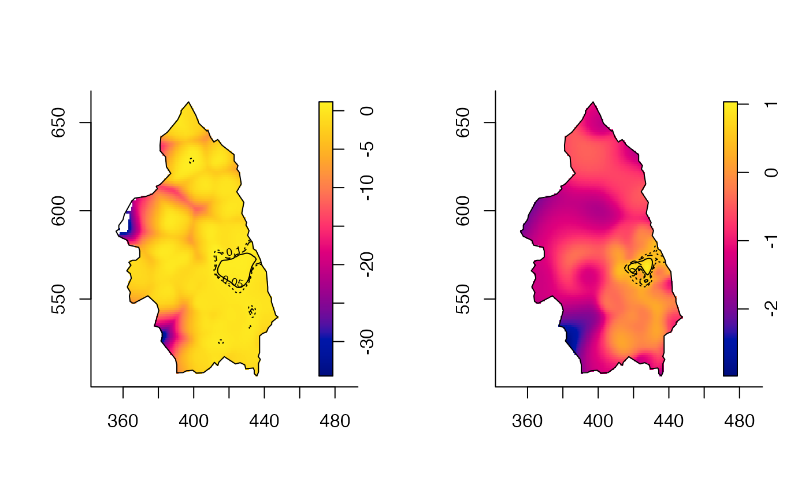
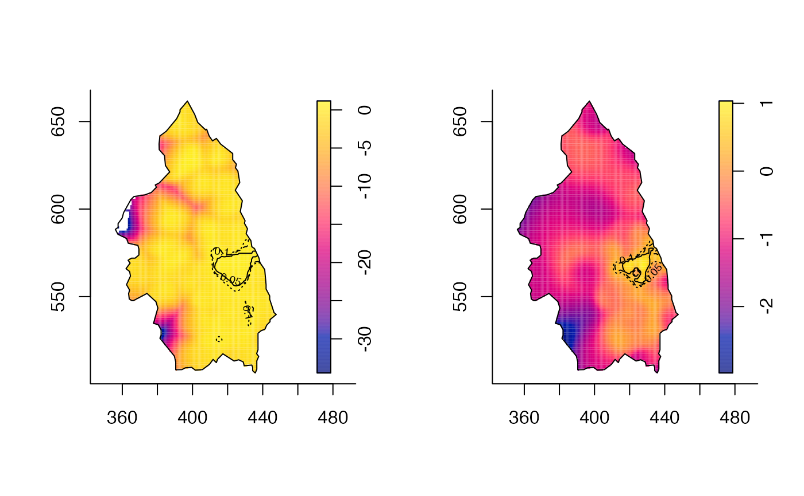

Calculates a p-value surface based on asymptotic theory or Monte-Carlo (MC) permutations describing the extremity of risk given a fixed or adaptive kernel-smoothed density-ratio, allowing the drawing of tolerance contours.
tolerance( rs, method = c("ASY", "MC"), ref.density = NULL, beta = 0.025, ITER = 100, parallelise = NULL, verbose = TRUE, ... )
| rs | An object of class |
|---|---|
| method | A character string specifying the method of calculation.
|
| ref.density | Required if |
| beta | A numeric value \(0 <\) |
| ITER | Number of iterations for the Monte-Carlo permutations. Ignored
if |
| parallelise | Numeric argument to invoke parallel processing, giving
the number of CPU cores to use when |
| verbose | Logical value indicating whether to print function progress during execution. |
| ... | Additional arguments to be passed to |
A pixel image of the estimated
p-value surface.
This function implements developments in Hazelton and Davies (2009) (fixed) and Davies and Hazelton (2010) (adaptive) to compute pointwise p-value surfaces based on asymptotic theory of kernel-smoothed relative risk surfaces. Alternatively, the user may elect to calculate the p-value surfaces using Monte-Carlo methods (see Kelsall and Diggle, 1995). Superimposition upon a plot of the risk surface contours of these p-values at given significance levels (i.e. ``tolerance contours'') can be an informative way of exploring the statistical significance of the extremity of risk across the defined study region.
Implementation of the Monte-Carlo method simply involves random allocation of case/control marks and
re-estimation of the risk surface ITER times, against which the
original estimate is compared. While not dependent on asymptotic theory, it is
computationally expensive, and it has been suggested that it might have some
undesirable practical consequences in certain settings (Hazelton and Davies,
2009). When performing the MC simulations, the same global (and pilot, if
necessary) bandwidths and edge-correction regimens are employed as were used
in the initial density estimates of the observed data. With regard to
arguments to be passed to internal calls of risk, the user
should take care to use ... to set the epsilon value to match
that which was used in creation of the object passed to rs (if this
was set to a non-default value). Furthermore, if performing MC simulations
for the adaptive relative risk function, the function borrows the value of
the beta argument to speed things up via partitioning, and the user
should additionally access ... to set the same pilot.symmetry
value as was used for creation of the object passed to rs, in the
same way as for any non-default use of epsilon. This will ensure the
simulations are all performed under the same conditions as were used to estimate the original risk
function.
The returned p-values are geared so that ``smallness''
corresponds to statistical significance of elevated risk, that is, an
upper-tailed test. The complement of the p-values will yeild
significance of reduced risk; a lower-tailed test. When using
tol.contour, the user can control what type of contours to
display.
Davies, T.M. and Baddeley A. (2018), Fast computation of spatially adaptive kernel estimates, Statistics and Computing, 28(4), 937-956.
Davies, T.M. and Hazelton, M.L. (2010), Adaptive kernel estimation of spatial relative risk, Statistics in Medicine, 29(23) 2423-2437.
Davies, T.M., Jones, K. and Hazelton, M.L. (2016), Symmetric adaptive smoothing regimens for estimation of the spatial relative risk function, Computational Statistics & Data Analysis, 101, 12-28.
Hazelton, M.L. and Davies, T.M. (2009), Inference based on kernel estimates of the relative risk function in geographical epidemiology, Biometrical Journal, 51(1), 98-109.
Kelsall, J.E. and Diggle, P.J. (1995), Kernel estimation of relative risk, Bernoulli, 1, 3-16.
T. M. Davies
#> Searching for optimal Hazelton h in [0.1,15.278]...Done.#> [1] 3.04405#>#>#> Initialising window...Done. #> Performing kernel*window convolution(s)...Done.#>#> #>#>adatol1 <- tolerance(riskada)#> Initialising window...Done. #> Convolving bandwidth-categorised kernels with window: #> --pass 1...Done.par(mfrow=c(1,2)) plot(riskfix) tol.contour(fixtol1,levels=c(0.1,0.05,0.01),lty=3:1,add=TRUE) plot(riskada)# MC fixtol2 <- tolerance(riskfix,method="MC",ITER=200)#> | | | 0% | | | 1% | |= | 1% | |= | 2% | |== | 3% | |== | 4% | |=== | 4% | |=== | 5% | |==== | 5% | |==== | 6% | |===== | 7% | |===== | 8% | |====== | 8% | |====== | 9% | |======= | 10% | |======= | 11% | |======== | 11% | |======== | 12% | |========= | 13% | |========= | 14% | |========== | 14% | |========== | 15% | |=========== | 15% | |=========== | 16% | |============ | 17% | |============ | 18% | |============= | 18% | |============= | 19% | |============== | 20% | |============== | 21% | |=============== | 21% | |=============== | 22% | |================ | 23% | |================= | 24% | |================= | 25% | |================== | 25% | |================== | 26% | |=================== | 27% | |=================== | 28% | |==================== | 28% | |==================== | 29% | |===================== | 30% | |===================== | 31% | |====================== | 31% | |====================== | 32% | |======================= | 32% | |======================= | 33% | |======================== | 34% | |======================== | 35% | |========================= | 35% | |========================= | 36% | |========================== | 37% | |========================== | 38% | |=========================== | 38% | |=========================== | 39% | |============================ | 40% | |============================ | 41% | |============================= | 41% | |============================= | 42% | |============================== | 42% | |============================== | 43% | |=============================== | 44% | |=============================== | 45% | |================================ | 45% | |================================ | 46% | |================================= | 47% | |================================= | 48% | |================================== | 48% | |================================== | 49% | |=================================== | 50% | |==================================== | 51% | |==================================== | 52% | |===================================== | 52% | |===================================== | 53% | |====================================== | 54% | |====================================== | 55% | |======================================= | 55% | |======================================= | 56% | |======================================== | 57% | |======================================== | 58% | |========================================= | 58% | |========================================= | 59% | |========================================== | 59% | |========================================== | 60% | |=========================================== | 61% | |=========================================== | 62% | |============================================ | 62% | |============================================ | 63% | |============================================= | 64% | |============================================= | 65% | |============================================== | 65% | |============================================== | 66% | |=============================================== | 67% | |=============================================== | 68% | |================================================ | 68% | |================================================ | 69% | |================================================= | 69% | |================================================= | 70% | |================================================== | 71% | |================================================== | 72% | |=================================================== | 72% | |=================================================== | 73% | |==================================================== | 74% | |==================================================== | 75% | |===================================================== | 75% | |===================================================== | 76% | |====================================================== | 77% | |======================================================= | 78% | |======================================================= | 79% | |======================================================== | 79% | |======================================================== | 80% | |========================================================= | 81% | |========================================================= | 82% | |========================================================== | 82% | |========================================================== | 83% | |=========================================================== | 84% | |=========================================================== | 85% | |============================================================ | 85% | |============================================================ | 86% | |============================================================= | 86% | |============================================================= | 87% | |============================================================== | 88% | |============================================================== | 89% | |=============================================================== | 89% | |=============================================================== | 90% | |================================================================ | 91% | |================================================================ | 92% | |================================================================= | 92% | |================================================================= | 93% | |================================================================== | 94% | |================================================================== | 95% | |=================================================================== | 95% | |=================================================================== | 96% | |==================================================================== | 96% | |==================================================================== | 97% | |===================================================================== | 98% | |===================================================================== | 99% | |======================================================================| 99% | |======================================================================| 100%adatol2 <- tolerance(riskada,method="MC",ITER=200,parallelise=2) # ~90secs with parallelisation#> Running MC iterations on 2 / 16 cores...Done.par(mfrow=c(1,2)) plot(riskfix) tol.contour(fixtol2,levels=c(0.1,0.05,0.01),lty=3:1,add=TRUE) plot(riskada)# }